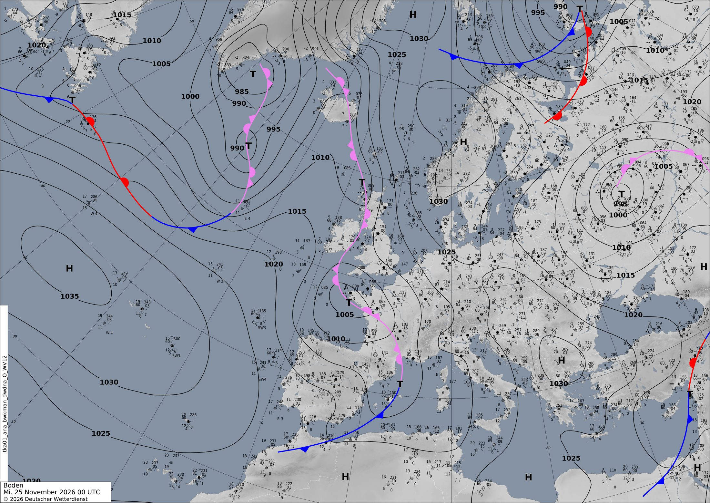

Una borrasca cruza hacia el Mediterráneo y un bloqueo escandinavo frena al Atlántico
Hoy una borrasca deja lluvia y viento en Francia y la Península de camino al golfo de Génova. Detrás llega aire más frío, y un anticiclón sobre Noruega mantiene lejos a una gran borrasca atlántica.
Europa y el Atlántico
Hoy, miércoles, la protagonista más cercana es una borrasca de unos 999 hPa, a unos 200 km al oeste de Bretaña. No está sola. Encima, a unos 5500 m, hay una bolsa de aire frío cerrada sobre el golfo de Vizcaya: se ve como un círculo de 544 dam en el mapa de 500 hPa. Por su flanco sur corre la corriente en chorro, a unos 244 km/h al noroeste de Galicia.
En la carta de análisis del DWD de las 00 UTC se ve su frente ocluido (la línea violeta). Baja desde Escocia, cruza el oeste de Francia y llega hasta Baleares. En el satélite de las 08:20 UTC es la banda blanca curvada sobre Francia y el Mediterráneo occidental. Mira aquí
El chorro empuja todo el conjunto hacia el este. Mañana a las 00 UTC la borrasca ya está en el golfo de Génova (1004 hPa), con la bolsa fría encima de Córcega. Sobre el Mediterráneo, todavía templado, se carga de humedad. El modelo da hasta 70 mm en 12 h al sureste de Roma y 59 mm cerca de los Balcanes. Pasado mañana llegan hasta 89 mm al noroeste de Grecia.
El segundo protagonista está en el norte: un bloqueo. Un anticiclón de 1036 hPa sobre Noruega, con una cresta cerrada en altura, hace de muro. Mientras tanto, en el Atlántico, una borrasca pasa de 991 hPa hoy a 970 hPa mañana y a 950 hPa pasado mañana, al suroeste de Islandia. Se ahonda unos 20 hPa al día, cerca del ritmo de una ciclogénesis explosiva. La alimenta un chorro de hasta 311 km/h al este de Terranova. Pero el muro escandinavo no la deja avanzar, y se queda girando entre Islandia y Groenlandia. Fíjate en el mapa de altura
El sábado a las 00 UTC (+72 h) el anticiclón del norte se ha corrido al Báltico (1039 hPa) y otro se asienta sobre Castilla y León. Un frente largo de la borrasca atlántica se acerca por el oeste a las islas británicas y a Francia. Ojo: a tres días vista, hasta dónde llegue ese frente es lo más incierto del pronóstico.
En península ibérica y Baleares
Hoy la Península queda bajo la cola del frente y de la borrasca que pasa por el norte. Entre las 00 y las 12 UTC el modelo da hasta 38 mm en 12 h en los puntos más regados. Entre las 12 y las 24 UTC, hasta 45 mm. Hay algo de energía para tormentas (CAPE de hasta 648 J/kg a mediodía), así que no se descarta algún chubasco fuerte con tormenta.
El viento es lo más llamativo: rachas de hasta 75 km/h a mediodía. Cuando una borrasca cruza Francia hacia el golfo de Génova, deja detrás vientos del noroeste que el relieve acelera. Es la situación típica del cierzo en el valle del Ebro y de la tramontana en el Ampurdán y Baleares, dos vientos regionales muy conocidos. Mira aquí
Detrás de la borrasca entra una masa de aire más fresca. La temperatura media a 850 hPa baja de 5,3 °C esta noche a 2,8 °C mañana a medianoche. Mañana jueves todavía habrá chubascos (hasta 24 mm en 12 h por la mañana), y luego irán a menos.
Pasado mañana y el sábado manda la alta presión: un anticiclón se instala sobre Castilla y León (1024 hPa el sábado a las 00 UTC). Con el cielo más despejado y el viento flojo, las noches serán muy frías. A medianoche del viernes, el punto más frío baja a −7,9 °C, y el sábado a −6,2 °C. Es el escenario de las inversiones térmicas y las nieblas en valles y mesetas. A mediodía, en las zonas más templadas, todavía se rondan los 18–19 °C. El viernes por la mañana aún puede caer algún chubasco aislado (hasta 18 mm en algún punto).
En Francia
Francia recibe hoy de lleno a la borrasca y su frente ocluido. Entre las 00 y las 12 UTC caen hasta 57 mm en 12 h en los puntos más regados, con rachas de hasta 75 km/h. Entre las 12 y las 24 UTC todavía se acumulan hasta 45 mm, mientras la borrasca se escapa hacia el Mediterráneo.
Lo que cambia respecto a la Península es el frío. Cuando la borrasca se va hacia Italia, el anticiclón escandinavo empuja aire continental desde el noreste. Pasado mañana a las 00 UTC, la temperatura a 850 hPa baja en algún punto hasta −7,6 °C, y a 2 m se llega a −18,9 °C a medianoche. Ojo: son valores de alta montaña, seguramente de las cumbres alpinas, no de las llanuras. La presión sube hasta 1031 hPa el sábado. Mira aquí
En la noche del viernes al sábado (hasta las 00 UTC), el frente atlántico que se acerca por el oeste deja hasta 14 mm en 12 h. Es la parte menos segura del pronóstico.
París y alrededores. Hoy, miércoles: 3–4 °C a medianoche y 5–8 °C a mediodía. Lluvia débil: hasta 3,7 mm por la mañana (00–12 UTC) y 1,9 mm por la tarde. Viento flojo, de 13 km/h como mucho. Mañana, jueves: 5–7 °C a medianoche y, curiosamente, algo menos a mediodía (4–5 °C), porque está entrando el aire frío. Prácticamente seco (0,1 mm) y viento de 8 km/h. Pasado mañana, viernes: helada a medianoche (de −2,7 a −1,4 °C) y 2–3 °C a mediodía, sin lluvia y casi en calma (7–8 km/h). Sábado a medianoche: otra vez unos −2 °C, seco, con la presión alta (1026 hPa) y viento de hasta 12 km/h.
Lección del día: Bloqueo atmosférico
Hoy vas a aprender a reconocer un bloqueo en el mapa de altura.
- Abre el mapa de 500 hPa de hoy: mira aquí. Busca sobre Noruega una zona de geopotencial alto (unos 560 dam) rodeada por las líneas. Es la cresta del bloqueo.
- Mira justo al sur. Sobre el golfo de Vizcaya hay una baja cerrada de 544 dam. Con una alta al norte y una baja al sur, el viento del oeste ya no puede ir recto y tiene que rodear el obstáculo.
- Avanza a +48 h: mira aquí. La borrasca atlántica se ha hecho enorme (950 hPa) y el chorro llega con fuerza desde Terranova. Pero al acercarse a Islandia las líneas se curvan hacia el norte: el flujo se desvía por encima del muro.
- Pasa a +72 h. La borrasca no ha llegado a Escandinavia. Ha retrocedido hacia Groenlandia, y el anticiclón sigue sobre el Báltico. Pregúntate: sin bloqueo, ¿dónde estaría esa borrasca el sábado?
Ponte a prueba
3 preguntas sobre el tiempo de hoy. Puedes mirar el mapa antes de contestar.
¿Por qué la gran borrasca que se forma al suroeste de Islandia no avanza hacia Escandinavia en los próximos días?
¿Hacia dónde se desplaza la borrasca que hoy está al oeste de Bretaña?
El chorro la empuja hacia el este: mañana a las 00 UTC está en el golfo de Génova, con la bolsa fría de altura sobre Córcega. Mira aquí
¿Por qué en París hará más frío a medianoche del viernes que a medianoche del jueves?
La presión pasa de unos 1013 a unos 1020 hPa y el viento se queda en 7 km/h. Bajo un anticiclón, con el cielo despejado, el suelo pierde calor por la noche y llega la helada. Mira aquí
La carta oficial
Análisis de superficie del servicio meteorológico alemán (DWD) válido el 25/11/2026 a las 00 UTC, dibujado por meteorólogos a partir de observaciones. Aquí sí hay frentes: azul con triángulos, frío; rojo con semicírculos, cálido; morado, ocluido. Las borrascas son T y los anticiclones H. Cómo leer esta carta.
